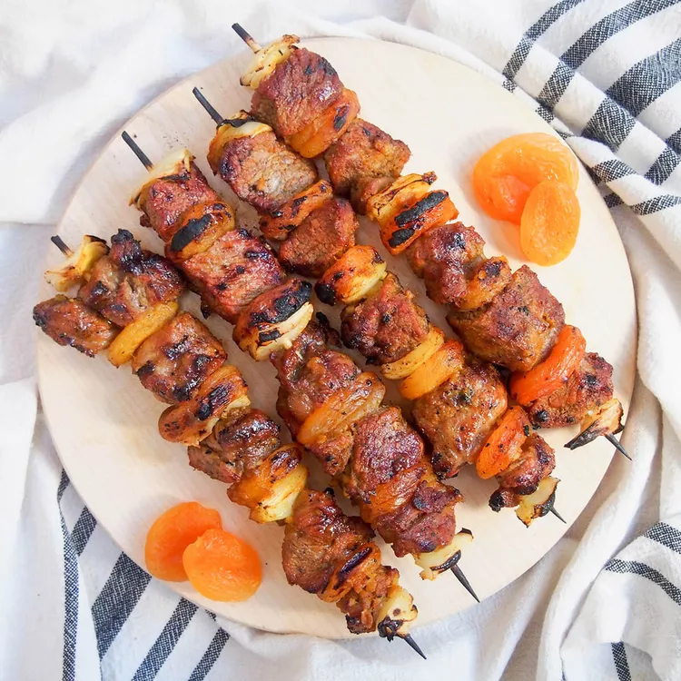

South African Lamb Sosaties

Final meal of South African Lamb Sosaties
Ingredients
- 1 cup plain yogurt
- 2 teaspoons curry powder
- 1 tablespoon white sugar
- 1 tablespoon vegetable oil
- 1 large onion
- 1 cup cubed lamb stew meat
- 12 ounces dried apricots
- 8 kabob skewers
Instructions
- Make the sauce by mixing together the yogurt, curry powder, sugar and oil in a small bowl. Taste and
adjust seasonings to your liking.
- Peel and cut the onion into 1 inch cubes. Thread skewers alternating lamb cubes, onion dried apricot
halves. Place them into a large resealable bag and pour in the sauce. Make sure the kabobs are evenly
well coated. Refrigerate and allow to marinate overnight or for at least 8 hours.
- Preheat grill to medium heat and lightly oil grate.
- Grill the kabobs over medium coals for 8 to 10 minutes on each side, or to your desired doneness.